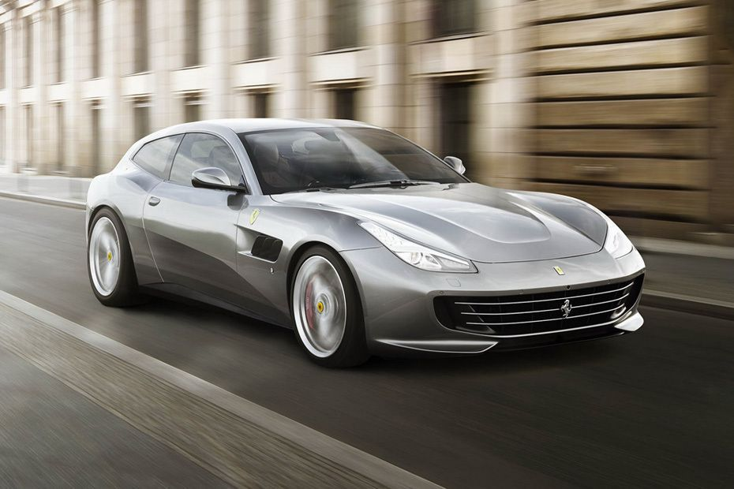

Picture
G
T
C
4
L
T



Spesifikasi Ferrari 812 SuperFast
| Mesin | 3855 CC |
|---|---|
| Tenaga | 609 HP |
| Jenis Transmisi | Otomatis |
| Kapasitas Bahan Bakar | 91 L |
| Jenis | AWD |
| Torsi | 760 Nm |
| Akselerasi | 3.4 s |
| Kecepatan Maksimum | 320 Kmph |
| Bahan Bakar | Bensin |
| Supensi Depan | MacPherson Strut |
| Supensi Belakang | Multi-Link |
| Shockbreaker | Coil Spring |
| Ukuran Velg | 20 Inch |
| Konfigurasi Katub | DOHC |
| Jumlah Silinder | 12 |